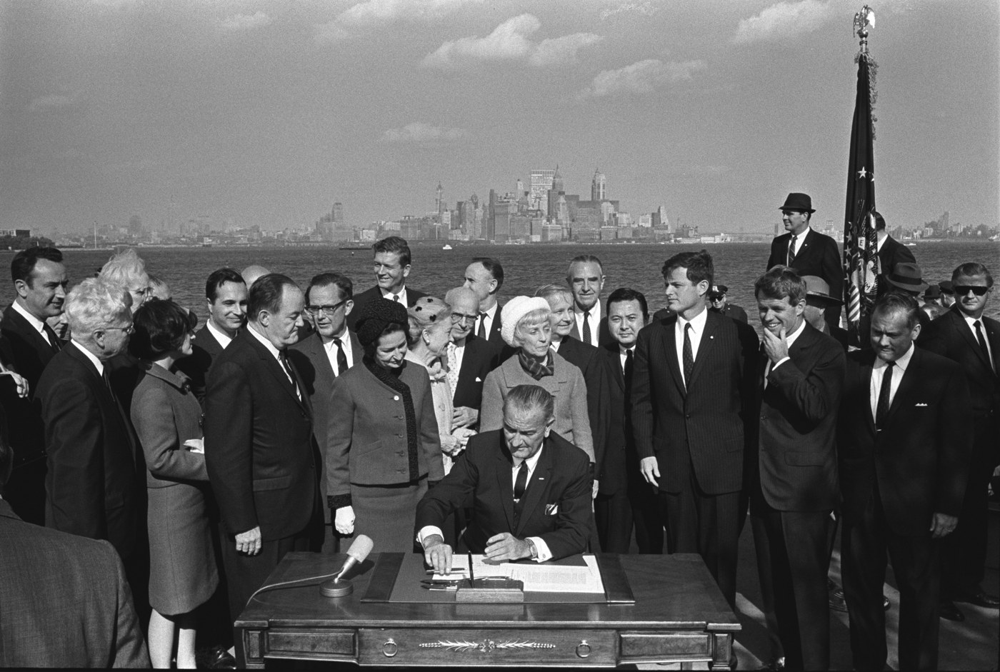

Directions: Work through the five stations in order. Each station holds one record of how the country's population and map changed after 1965, quoted from the edition named in its Source line with cuts marked by ellipses, given as a data record built from the federal source named on its face, or labeled as a summary where the record is summarized. As you work, keep the ledger in Part 2: for each record, enter the change it documents, its cause as the documents give it, and its size. At the end, judge which single document best explains the country's changed map in 2020, and answer the strongest rival.
Source: Summary record written for this lesson from the public record of the Immigration and Nationality Act of 1965, Public Law 89-236, 79 Stat. 911, signed October 3, 1965. This station is a summary, not a quotation. It is labeled as a summary on its face, and no sentence in it is presented as the statute's exact words. Photograph: Yoichi Okamoto, Lyndon Baines Johnson Library, via Wikimedia Commons.

The act ended the national origins quota system, under which each country's yearly quota had been set by the national origins of the American population of an earlier census, favoring northern and western Europe and nearly excluding Asia. A transition period ran to June 30, 1968, and after that date no quota was assigned by national origin.
In its place the act built a ceiling and a set of preferences. For the Eastern Hemisphere it set a ceiling of 170,000 immigrant visas a year, with no more than 20,000 to natives of any one country. Within the ceiling, preference went first to family reunification: unmarried sons and daughters of citizens, spouses and children of permanent residents, married sons and daughters of citizens, and brothers and sisters of citizens. Later preferences covered members of the professions and scientists and artists of exceptional ability, skilled and unskilled workers in occupations in short supply, and refugees. Immediate relatives of United States citizens, spouses, minor children, and parents, were admitted outside the ceiling altogether. For the Western Hemisphere the act set a ceiling of 120,000 a year beginning in 1968, the first numerical limit ever placed on immigration from this hemisphere.
Members of Congress who carried the act predicted on the record that it would not greatly change the amount of immigration or the mixture of countries it came from. The stations that follow measure the act by what happened instead.
State what the act abolished, and state the two numbers that replaced the old quotas for the Eastern Hemisphere.
The preference order puts family relationships ahead of skills. From the reading's account of what happened after 1965, explain why that order, and not the ceilings, did the most to change who came.
The act's carriers predicted little change. Name one provision in this summary that helps explain why the prediction failed, and say how it worked over fifty years.
Source: Immigration Reform and Control Act of 1986, November 6, 1986 (enrolled text, verified against the Statutes at Large), as carried in the audited source record. The act is a public document. Two passages are quoted, one from Section 101 on hiring and one from Section 201 on legalization. Cuts are marked by ellipses.
On hiring. "It is unlawful for a person or other entity to hire, or to recruit or refer for a fee, for employment in the United States [...] an alien knowing the alien is an unauthorized alien [...] with respect to such employment, or [...] an individual without complying with the requirements of subsection (b). [...] It is unlawful for a person or other entity, after hiring an alien for employment [...] to continue to employ the alien in the United States knowing the alien is (or has become) an unauthorized alien with respect to such employment."
On legalization. "The Attorney General shall adjust the status of an alien to that of an alien lawfully admitted for temporary residence if the alien meets the following requirements: [...] The alien must establish that he entered the United States before January 1, 1982, and that he has resided continuously in the United States in an unlawful status since such date and through the date the application is filed under this subsection."
The hiring passage turns on one word. Name it, and state what difference it makes to enforcement: what must the government show about an employer, beyond the worker's status?
The legalization passage sets a date line. State the date, and state what two facts an applicant had to establish about residence to qualify.
The reading reports a later criticism: the legalization was carried out and the workplace enforcement was not. Using these two passages, state one reason the two halves might not be carried out with equal force.
Source: Commission on Wartime Relocation and Internment of Civilians, Personal Justice Denied, 1982 to 1983 (National Archives), as carried in the audited source record. The report is a public document. Cuts are marked by ellipses. Photograph: National Archives, via Wikimedia Commons.
"The promulgation of Executive Order 9066 was not justified by military necessity, and the decisions which followed from it [...] were not driven by analysis of military conditions. The broad historical causes which shaped these decisions were race prejudice, war hysteria and a failure of political leadership. Widespread ignorance of Japanese Americans contributed to a policy conceived in haste and executed in an atmosphere of fear and anger at Japan. A grave injustice was done to American citizens and resident aliens of Japanese ancestry who, without individual review or any probative evidence against them, were excluded, removed and detained by the United States during World War II. [...]
In its June 1983 recommendations, the Commission called for a joint resolution of Congress recognizing 'that a grave injustice was done' and offering 'the apologies of the nation for the acts of exclusion, removal and detention,' and for 'a one-time per capita compensatory payment of $20,000 to each of the approximately 60,000 surviving persons excluded from their places of residence pursuant to Executive Order 9066.'"
State the commission's conclusion about military necessity, and name the three broad historical causes it gave for the wartime decisions.
The report says the injustice was done without individual review or probative evidence. Explain in your own words what those two phrases mean, and why the commission placed them at the center of its finding.
State the two remedies the commission recommended in June 1983, with the payment's amount and the number of surviving persons it counted.
Source: Data record built for this lesson from United States Census Bureau figures, decennial censuses of 1970 through 2000 and the American Community Survey for 2010, as published by the Census Bureau. Figures are rounded as the bureau reports them in summary tables. This station is a data record, not a quotation.
| Year | Foreign born population | Percent of total population |
|---|---|---|
| 1970 | about 9.6 million | 4.7 percent |
| 1980 | about 14.1 million | 6.2 percent |
| 1990 | about 19.8 million | 7.9 percent |
| 2000 | about 31.1 million | 11.1 percent |
| 2010 | about 40.0 million | about 13 percent |
Read the two columns against each other. By what factor did the foreign born population grow between 1970 and 2010, and by how many percentage points did its share of the population rise?
The 1970 row is the lowest share in the table. Using Station 1, explain what law stood behind the low 1970 figure, and what changed in the law five years before that census.
A table of totals cannot show where newcomers came from or why they came. Name two facts from the reading that this table needs beside it before it can support a claim about the country's changed composition.
Source: Data record built for this lesson from United States Census Bureau figures, decennial censuses of 1950 and 2010 and the bureau's reapportionment records, as published by the Census Bureau. Figures are rounded as the bureau reports them in summary tables. This station is a data record, not a quotation.
| Place | Population, 1950 | Population, 2010 |
|---|---|---|
| Detroit, Michigan | about 1.85 million | about 714,000 |
| Phoenix, Arizona | about 107,000 | about 1.45 million |
One further record from the same source. In each reapportionment after the censuses of 1970, 1980, 1990, 2000, and 2010, the states of the South and West gained seats in the House of Representatives and the states of the Northeast and Midwest lost them. Seats follow the census count, so each decade's apportionment is the decade's migration written into Congress.
State each city's change as a proportion: roughly what share of its 1950 population did Detroit hold in 2010, and roughly how many times larger was Phoenix in 2010 than in 1950?
From the reading, name the forces behind each city's line: the two that emptied Detroit's factory districts and tax base, and the three that drew movers to the Sun Belt.
The reapportionment record closes the station. Explain in one or two sentences how a family's decision to move from Michigan to Arizona becomes, ten years later, a change in the House of Representatives.
Enter the ledger from your station answers and the reading. One row for each record.
| Record | Change it documents | Cause, as the documents give it | Size |
|---|---|---|---|
| The 1965 act, summary | |||
| The 1986 act | |||
| Personal Justice Denied | |||
| The foreign born table | |||
| Two cities, census record |
Close the file with a verdict. Judge which single document in this file best explains the country's changed map in 2020. Defend your judgment from the stations, and answer the strongest rival: if you choose a law, answer the claim that a census table explains more because it measures the result; if you choose a table, answer the claim that no table explains anything without the law that set the movement going.
What was abolished, and the two numbers. The act abolished the national origins quota system. For the Eastern Hemisphere it substituted a ceiling of 170,000 immigrant visas a year and a limit of 20,000 to natives of any one country, with immediate relatives of citizens admitted outside the ceiling. This station is a labeled summary resting on the public record of Public Law 89-236, and students should be able to say why it is a summary rather than a quotation. (Blueprint 9)
Why the preference order worked. Family reunification stood first in the preferences, and immediate relatives stood outside the numbers entirely. Each admitted immigrant could therefore become the sponsor of further immigrants, so admissions compounded across decades in a way a fixed skills quota would not have. The reading's figures, from about 9.6 million foreign born in 1970 to about 40 million in 2010, are the result. (Blueprint 9)
The provision behind the failed prediction. Accept either of two answers, well explained. The admission of immediate relatives outside the ceiling removed the act's own limit from its largest category. Or the family preferences themselves, especially brothers and sisters of citizens, built chains of sponsorship that the act's carriers did not project. Weak answers blame the act's carriers without naming a provision. (Blueprint 9)
The word, and what must be shown. The word is knowing, in the phrase knowing the alien is an unauthorized alien. The government must show the employer's knowledge, not only the worker's status, which makes each case turn on what a particular employer knew and when. (Blueprint 9)
The date line and the two facts. The applicant had to establish entry into the United States before January 1, 1982, and continuous residence in the United States in an unlawful status from that date through the filing of the application. (Blueprint 9)
Why the halves could be kept unequally. The legalization half ran once, on applications the immigrants themselves filed, with dates and residence the applicants had reason to document. The hiring half had to be enforced case by case against employers, each case turning on proof of knowledge, year after year and workplace by workplace. Accept any answer grounded in that difference of machinery. Grade the use of the passages, not the position a student takes on the act. (Blueprint 9)
The conclusion and the three causes. The commission concluded that the promulgation of Executive Order 9066 was not justified by military necessity. The broad historical causes it named were race prejudice, war hysteria, and a failure of political leadership. Grade the three causes exactly. (Blueprint 9)
Individual review and probative evidence. Individual review means a hearing or examination of each person's own case. Probative evidence means evidence that tends to prove the fact it is offered for, here evidence against the person removed. The phrases sit at the center because the commission's finding is that citizens and resident aliens were excluded, removed, and detained as a group, on ancestry, with no showing against any one of them. (Blueprint 9)
The two remedies. A joint resolution of Congress recognizing that a grave injustice was done and offering the apologies of the nation, and a one time per capita compensatory payment of 20,000 dollars to each of the approximately 60,000 surviving persons excluded under Executive Order 9066. Congress enacted both in the Civil Liberties Act of 1988, as the station photograph shows President Reagan signing. (Blueprint 9)
The factor and the points. The foreign born population grew by a factor of about four, from about 9.6 million to about 40.0 million. Its share rose by about eight percentage points, from 4.7 percent to about 13 percent. Accept a rise stated as 8.2 points where students compute from 12.9 percent for 2010. (Blueprint 9)
The law behind the low figure. The national origins quota system, in force since the 1920s, stood behind the low 1970 share, because it had restricted immigration for four decades and favored a narrow set of countries. Five years before the 1970 census, the Immigration and Nationality Act of 1965 abolished the quotas and built the family and skills preference system whose effects the later rows of the table record. (Blueprint 9)
What the table needs beside it. Any two of the following, accurately stated: the shift in sources, from Europe and Canada in 1960 toward Mexico, the Philippines, India, China, and Vietnam by the 2000s; the mechanism, family reunification and refugee admissions under the 1965 system; the legal status history, including the 1986 legalization of about three million people. A total alone cannot show composition or cause. (Blueprint 9 and 10)
The proportions. Detroit in 2010 held roughly two fifths of its 1950 population, about 714,000 against about 1.85 million, a loss of more than half. Phoenix in 2010 was roughly thirteen to fourteen times its 1950 size, about 1.45 million against about 107,000. Accept proportions computed from the rounded figures in the table. (Blueprint 10)
The forces behind the lines. Detroit: deindustrialization, the long decline of manufacturing employment as factories closed, automated, or moved abroad, and white flight, the movement of white families to the suburbs that shrank the city's tax base. The Sun Belt: air conditioning, defense and technology work, and lower costs, the three causes named in the Sun Belt definition. (Blueprint 10)
From a move to a seat. The census counts people where they live, and House seats are apportioned among the states by that count every ten years. A family that moves from Michigan to Arizona lowers Michigan's count and raises Arizona's, and when enough families make the same move, the reapportionment that follows the census transfers seats, and electoral votes, from the states they left to the states they joined. The record shows the South and West gaining in every reapportionment from 1970 onward. (Blueprint 10)
Ledger, in brief. The 1965 act, summary: documents the legal change, the end of national origins quotas and the building of the family and skills preference system; cause, stated in the act itself, a judgment that sorting by national origin should end; size, ceilings of 170,000 and 120,000 with 20,000 per country, and immediate relatives outside the numbers. The 1986 act: documents the settlement, legal status for those present before 1982 joined to the first ban on knowingly hiring unauthorized workers; cause, a population of several million living without authorization and the argument it produced; size, about three million people legalized. Personal Justice Denied: documents a revised national judgment on the wartime internment; cause, the commission's finding of race prejudice, war hysteria, and a failure of political leadership, with no military necessity; size, about 120,000 people removed in the war years, about 60,000 surviving in 1983, and 20,000 dollars each under the act that followed. The foreign born table: documents the transformation of the population; cause, left blank by the table itself, which is the station's lesson; size, about 9.6 million and 4.7 percent in 1970 to about 40 million and about 13 percent in 2010. Two cities, census record: documents the internal remaking; cause, deindustrialization and white flight at one end and air conditioning, defense and technology work, and lower costs at the other; size, Detroit about 1.85 million to about 714,000, Phoenix about 107,000 to about 1.45 million, and House seats moving south and west in every reapportionment from 1970 onward. (Blueprint 9 and 10)
Full credit verdicts argue from the ledger. For the 1965 act: every later record in the file runs downstream of it, the 1986 settlement presupposes the population it admitted, and the census table's rows begin rising only after its preferences took hold, while the strongest rival, the table itself, measures the change without explaining it, as Station 4 requires students to concede. For the census table: the laws state intentions, and this file shows intentions failing as predictions in 1965 and being kept unequally in 1986, while the table alone records what the country actually became, in both its foreign born and its internal movements when Station 5 is read with it. For Personal Justice Denied or the two cities record, credit requires the student to show how one document reaches both movements, which is harder and should be rewarded when the evidence carries it. No verdict earns full credit that ignores size: a claim about a changed map must say how much changed.